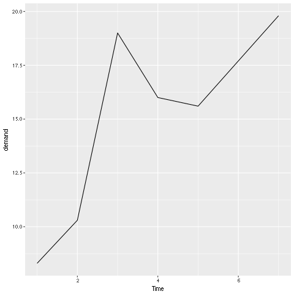
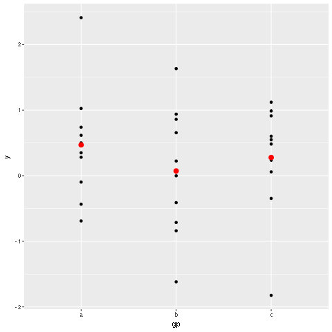
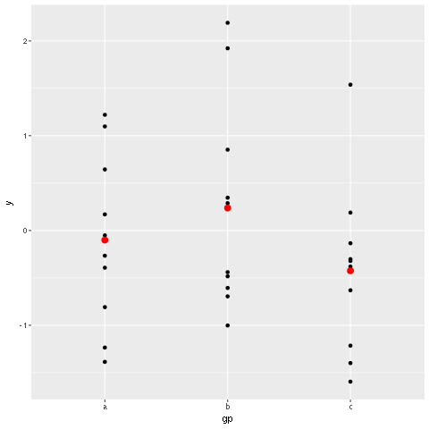
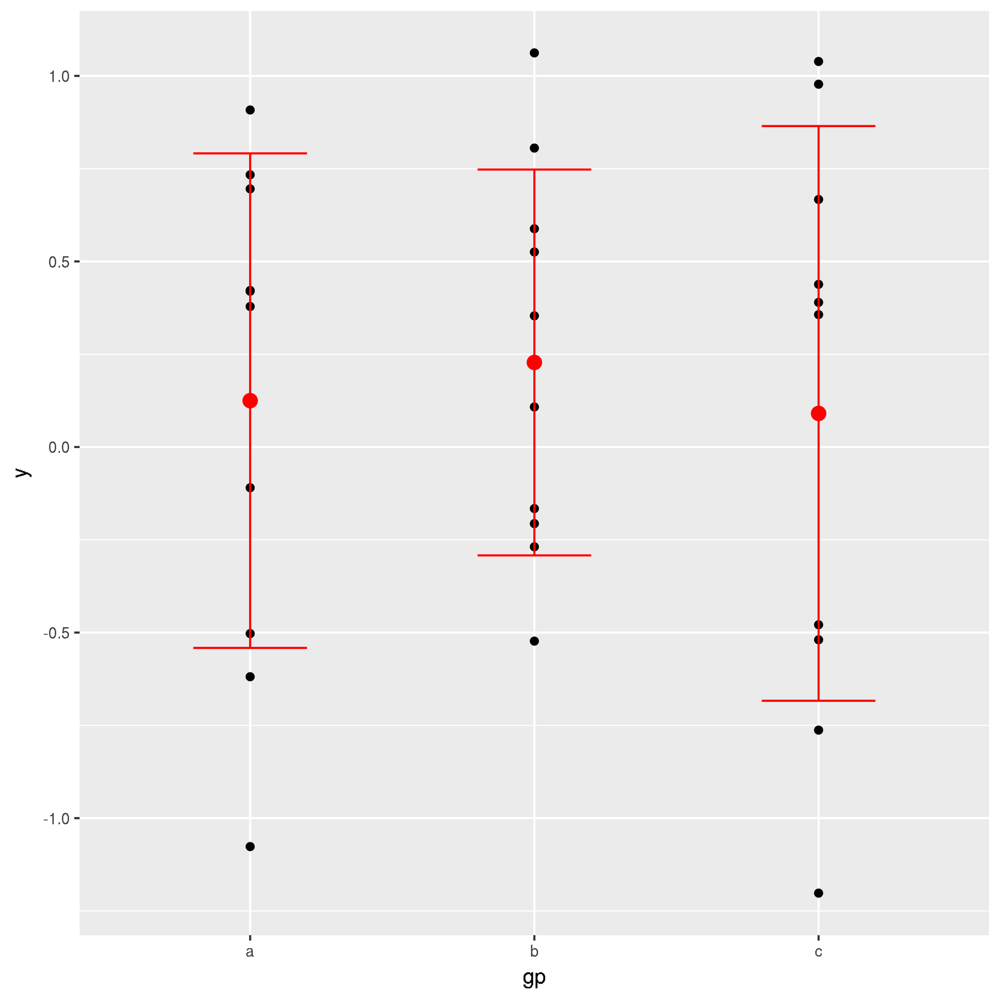
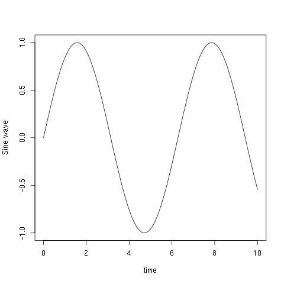
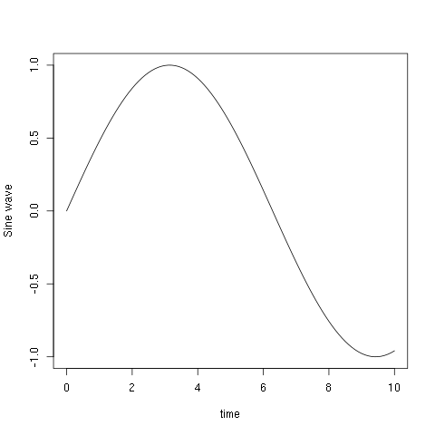
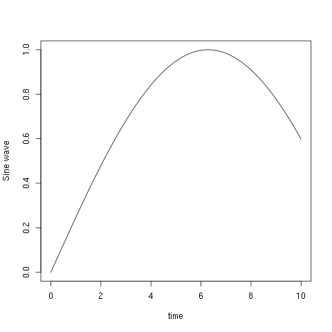
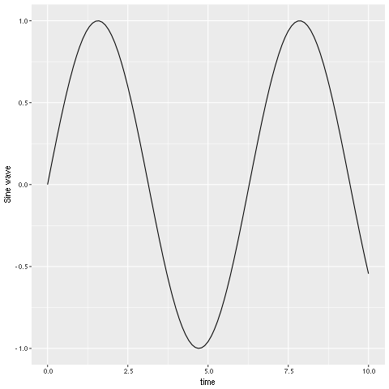
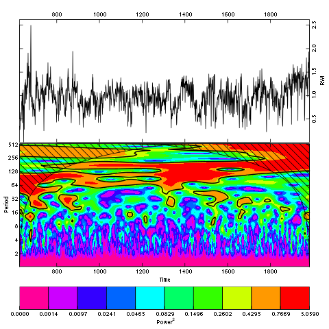

Table of Contents
1 R语言画图教程
1.1 利用表格数据画折线图
library(ggplot2) library(gcookbook) BOD ##作图使用的数据表 ## Time demand ## 1 1 8.3 ## 2 2 10.3 ## 3 3 19.0 ## 4 4 16.0 ## 5 5 15.6 ## 6 7 19.8 ggplot(BOD, aes(x = Time, y = demand))+geom_line() #变量Time为连续变量

1.2 样点图
- ggplot使用方式一
#Generate some sample data, then compute mean and standard deviation #in each group library(ggplot2) df <- data.frame( gp = factor(rep(letters[1:3], each=10)), y = rnorm(30) ) ds <- plyr::ddply(df, "gp", plyr::summarise, mean = mean(y), sd = sd(y)) # The summary data frame ds is used to plot large red points on top # of the raw data. Note that we don't need to supply 'data' or `mapping` # in each layer because the defaults from ggplot() are used ggplot(df,aes(gp,y))+geom_point()+geom_point(data=ds,aes(y=mean),color='red',size=3)

- ggplot使用方式2

#same plot as above,declaring only the data frame in ggplot(). #Note how the x and y aesthetics must now be declared in each goem_point() layer library(ggplot2) df <- data.frame( gp = factor(rep(letters[1:3], each=10)), y = rnorm(30) ) ds <- plyr::ddply(df, "gp", plyr::summarise, mean = mean(y), sd = sd(y)) ggplot(df)+geom_point(aes(gp,y))+ geom_point(data = ds, aes(gp, mean), colour = 'red', size = 3)
- ggplot方式3
#Alternatively we can fully specify the plot in each layer, This #is not useful here, but can be more clear when working with complex # mult-dataset graphics library(ggplot2) df <- data.frame( gp = factor(rep(letters[1:3], each=10)), y = rnorm(30) ) ds <- plyr::ddply(df, "gp", plyr::summarise, mean = mean(y), sd = sd(y)) ggplot() + geom_point(data = df, aes(gp, y)) + geom_point(data = ds, aes(gp, mean), colour = 'red', size = 3) + geom_errorbar( data = ds, aes(gp, mean, ymin = mean - sd, ymax = mean + sd), colour = 'red', width = 0.4 )

1.3 R语言本身画正弦曲线
t = seq(0,10,0.1) y = sin(t) plot(t,y,type="l", xlab="time", ylab= "Sine wave")

1.3.1 正弦波缩放
- \(a = \frac{1}{2}\)
t = seq(0,10,0.1) y = sin(0.5*t) plot(t,y,type="l", xlab="time", ylab= "Sine wave")

- \(a = \frac{1}{4}\)
t = seq(0,10,0.1) y = sin(0.25*t) plot(t,y,type="l", xlab="time", ylab= "Sine wave")

- 正弦线的平移
t = seq(0,10,0.1); y = sin(t - 4); plot(t,y,type="l",xlab="time", ylab="Sine wave");
- 正弦线的向左平移
t = seq(0,10,0.1); y = sin(t + 4); plot(t,y,type="l",xlab="time", ylab="Sine wave");
1.4 ggplot画正弦曲线
library(ggplot2) t = seq(0,10,0.1) y = sin(t) qplot(t,y,geom="path", xlab="time", ylab="Sine wave")

1.5 ggplot画小波图像
library(utils) library(dplR) data(ca533) ca533.rwi<-detrend(rwl = ca533, method = "ModNegExp") ca533.crn <- chron(ca533.rwi, prefix = "CAM", prewhiten = FALSE) Years <- as.numeric(rownames(ca533.crn)) CAMstd <- ca533.crn[,1] out.wave<- morlet(y1 = CAMstd,x1 = Years, p2 = 9, dj = 0.1, siglvl = 0.99) wavelet.plot(out.wave,useRaster = NA)

2 Matliblot画图教程
import matplotlib matplotlib.use('Agg') import matplotlib.pyplot as plt fig=plt.figure(figsize=(3,2)) plt.plot([1,3,2]) plt.savefig('myfig.png') return 'myfig.png'